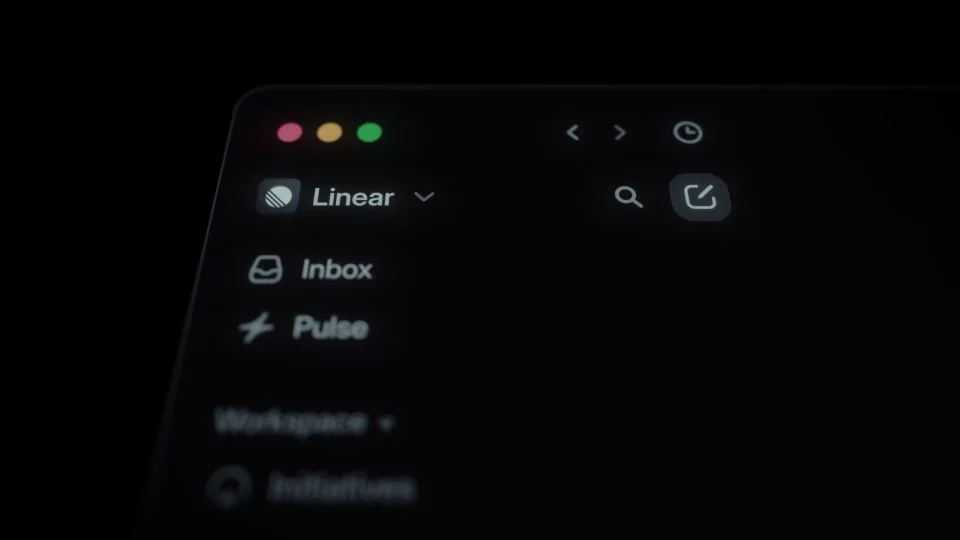
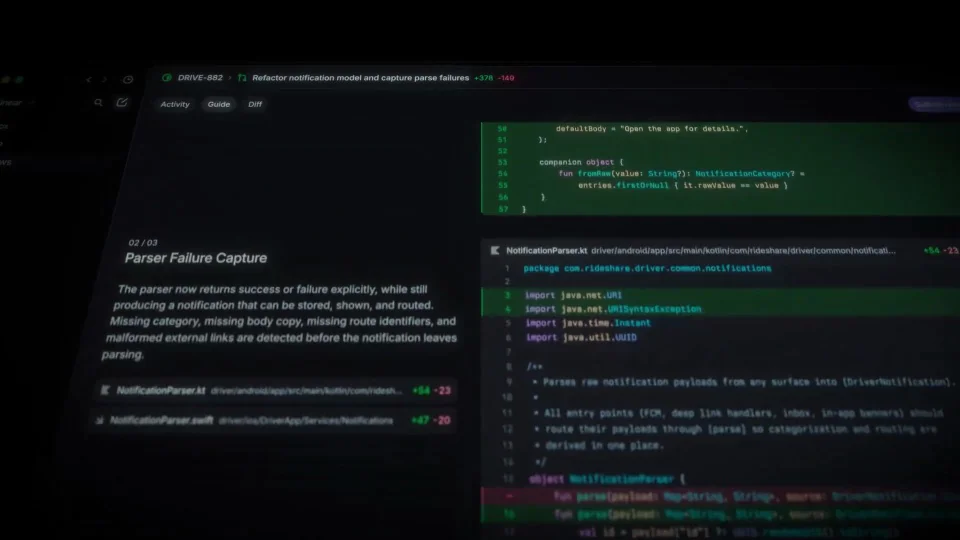
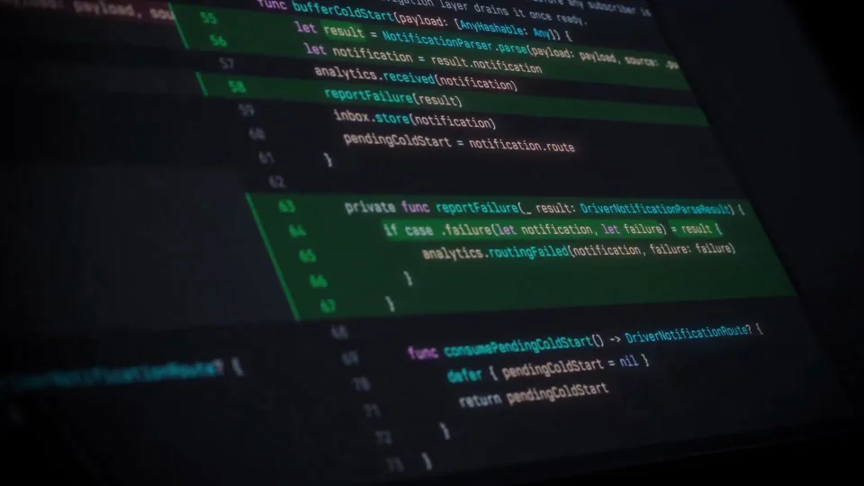
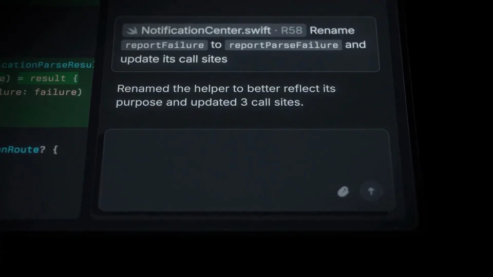
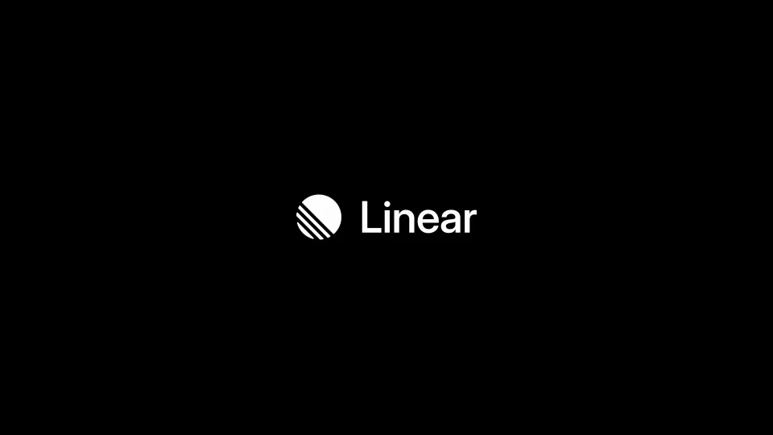

Linear / V249
Linear Diffs — code review inside Linear
把评审演成四个有因果的动作：选择变更、比较差异、留下评论、提交评审。代码归属和评论位置必须清楚。
构图与编排 可播放 · 可替换内容
整体编排规则示例
查看 HTML 源码
<!doctype html><html lang="zh-CN"><meta charset="utf-8"><meta name="viewport" content="width=device-width,initial-scale=1"><title>Linear Diffs — code review inside Linear · sequence</title><style>html,body{margin:0;width:100%;height:100%;overflow:hidden;background:#090a0c}canvas{display:block;width:100%;height:100%;object-fit:contain}</style><body data-mode="sequence"><canvas width="1000" height="600"></canvas><script src="data.js"></script><script src="common.js"></script><script src="scene.js"></script><script src="bridge.js"></script></body></html>画面元素评审列表代码差异说明文档评论提交按钮
MOTION LANGUAGE
动作与构图
局部动作 · 构图规则
01
先选变更，再进入差异
先选变更，再进入差异规则示例
查看 HTML 源码
<!doctype html><html lang="zh-CN"><meta charset="utf-8"><meta name="viewport" content="width=device-width,initial-scale=1"><title>Linear Diffs — code review inside Linear · sequence</title><style>html,body{margin:0;width:100%;height:100%;overflow:hidden;background:#090a0c}canvas{display:block;width:100%;height:100%;object-fit:contain}</style><body data-mode="clip" data-start="5" data-end="19"><canvas width="1000" height="600"></canvas><script src="data.js"></script><script src="common.js"></script><script src="scene.js"></script><script src="bridge.js"></script></body></html>变更列表建立文件范围，点击后进入对应代码。文件名与选中状态持续可见，差异近景突出关键行，不同时滚动多个无关区域。
02
说明与代码并排，评论贴着目标行
说明与代码并排，评论贴着目标行规则示例
查看 HTML 源码
<!doctype html><html lang="zh-CN"><meta charset="utf-8"><meta name="viewport" content="width=device-width,initial-scale=1"><title>Linear Diffs — code review inside Linear · sequence</title><style>html,body{margin:0;width:100%;height:100%;overflow:hidden;background:#090a0c}canvas{display:block;width:100%;height:100%;object-fit:contain}</style><body data-mode="clip" data-start="19" data-end="40"><canvas width="1000" height="600"></canvas><script src="data.js"></script><script src="common.js"></script><script src="scene.js"></script><script src="bridge.js"></script></body></html>说明文档位于代码旁边，解释当前变化。评论入口与相关代码行对齐，输入时保留被评论行；完成评论后再提交整次评审。
03
红绿颜色承担明确语义
红色表示删除，绿色表示新增，其余界面维持黑灰与冷紫层级。代码采用等宽字，说明和按钮使用无衬线；斜视镜头与缩放不改变文件和行的对应关系。
04
提交之后再给产品主张
提交按钮与完成状态是评审链条的终点。动作完成后收掉细节，让主张和品牌获得单独停留；不要在尾段又打开新文件。
05
也可以迁移到文稿或设计评审
保留对象选择、前后比较、定点评论和明确提交。替换差异内容时同步更换文件名、说明、评论和完成状态；不同颜色继续表达稳定的比较含义。
SEQUENCE
段落与节奏
点击段落，定位到上方编排示意。





画面参考 · 离散静帧
KEEP THE RELATIONSHIPS
制作其他主题
- 可迁移审稿、设计差异或配置评审；保留选择→比较→评论→提交。
制作约束
评审列表 / 代码差异 / 说明文档 / 评论 / 提交按钮
- 先选变更再看差异，评论定位到代码行，最后明确提交评审。
- 红绿差异色保留添加与删除语义，斜镜头不改变代码归属。